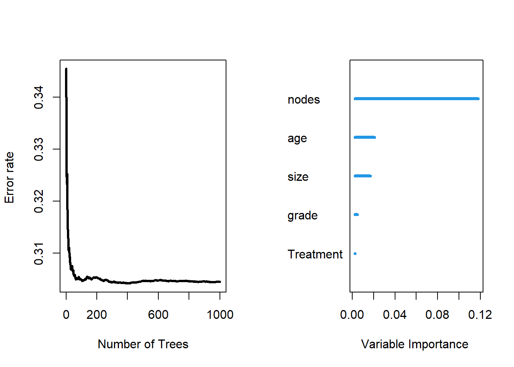

Chapter4 Random Survival Forest
Another point of interest might be how could we predict a patients survival based on some of his/ her diagnostics and treatment records. In order to do this, we will fit a random survival forest model to make predictions.
4.1 dtime
set.seed(453)
# Sample the data and create a training subset.
train <- sample(1:nrow(rotterdam), round(nrow(rotterdam) * 0.80))
# Train the model.
rotterdam.grow <- rfsrc(Surv(dtime, death) ~ Treatment + size + nodes + age + grade, rotterdam[train, ], ntree = 100)
# Test the model.
rotterdam.pred <- predict(rotterdam.grow, rotterdam[-train , ])
# Compare the results.
print(rotterdam.grow)## Sample size: 2386
## Number of deaths: 1022
## Number of trees: 100
## Forest terminal node size: 15
## Average no. of terminal nodes: 110.28
## No. of variables tried at each split: 3
## Total no. of variables: 5
## Resampling used to grow trees: swor
## Resample size used to grow trees: 1508
## Analysis: RSF
## Family: surv
## Splitting rule: logrank *random*
## Number of random split points: 10
## Error rate: 31.87%## Sample size of test (predict) data: 596
## Number of deaths in test data: 250
## Number of grow trees: 100
## Average no. of grow terminal nodes: 110.28
## Total no. of grow variables: 5
## Resampling used to grow trees: swor
## Resample size used to grow trees: 377
## Analysis: RSF
## Family: surv
## Test set error rate: 27.43%As we can see from the RSF result, our test set error rate is 27.43%, which is not very ideal.

##
## Importance Relative Imp
## nodes 0.1178 1.0000
## age 0.0209 0.1771
## size 0.0168 0.1423
## grade 0.0049 0.0412
## Treatment 0.0026 0.0223As we can see, in our fit of RSF, the most important variable is nodes and the second most important variable is age. Both variables are quantitative variables.
4.2 rtime
set.seed(453)
# Sample the data and create a training subset.
train <- sample(1:nrow(rotterdam), round(nrow(rotterdam) * 0.80))
# Train the model.
rotterdam.grow <- rfsrc(Surv(rtime, recur) ~ Treatment + size + nodes + age + grade, rotterdam[train, ], ntree = 100)
# Test the model.
rotterdam.pred <- predict(rotterdam.grow, rotterdam[-train , ])
# Compare the results.
print(rotterdam.grow)## Sample size: 2386
## Number of deaths: 1211
## Number of trees: 100
## Forest terminal node size: 15
## Average no. of terminal nodes: 111.27
## No. of variables tried at each split: 3
## Total no. of variables: 5
## Resampling used to grow trees: swor
## Resample size used to grow trees: 1508
## Analysis: RSF
## Family: surv
## Splitting rule: logrank *random*
## Number of random split points: 10
## Error rate: 33.28%## Sample size of test (predict) data: 596
## Number of deaths in test data: 307
## Number of grow trees: 100
## Average no. of grow terminal nodes: 111.27
## Total no. of grow variables: 5
## Resampling used to grow trees: swor
## Resample size used to grow trees: 377
## Analysis: RSF
## Family: surv
## Test set error rate: 30.23%##
## Importance Relative Imp
## nodes 0.1179 1.0000
## size 0.0141 0.1192
## age 0.0138 0.1173
## grade 0.0137 0.1161
## Treatment 0.0050 0.0426Similarly, RSF for predicting rtime also have error rate around 30%, and the most important factors are node, size and age.
Though the prediction from RSF is not that accurate, but its variable importance ranking gives us very similar information to Chapter 3, that the diagnostic values and age are the most significant part that decides patients’ lives.